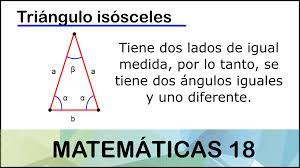

Triángulo Isósceles
¿Qué es?
Un triángulo isósceles es un triángulo que tiene al menos dos lados congruentes. Los lados congruentes del triángulo isósceles se llaman patas. Al otro lado se le llama la base. Los ángulos entre la base y las patas se denominan ángulos de base.El ángulo formado por las dos patas se denomina ángulo de vértice. Una de las propiedades importantes de los triángulos isósceles es que sus ángulos de base son siempre congruentes. Esto se llama Teorema de Ángulos Base.
Formula para calcular el área
El área de un triángulo isósceles se calcula mediante el producto de la base por la altura dividido entre dos.
Calcular el perímetro
El perímetro de un triángulo isósceles se calcula mediante la suma de las medidas de sus lados. La expresión se puede simplificar ya que dos de sus lados tienen la misma medida, por lo tanto, el perímetro es dos veces el lado repetido(a) más el lado desigual (b).

Características
- Dos lados son congruentes el uno con el otro, es decir, dos lados tienen la misma longitud.
- El tercer lado de un triángulo isósceles, que es desigual a los otros dos lados, es llamado la base del triángulo isósceles
- Los dos ángulos opuestos a los lados iguales son congruentes el uno con el otro. Esto significa que tiene dos ángulos bases congruentes.